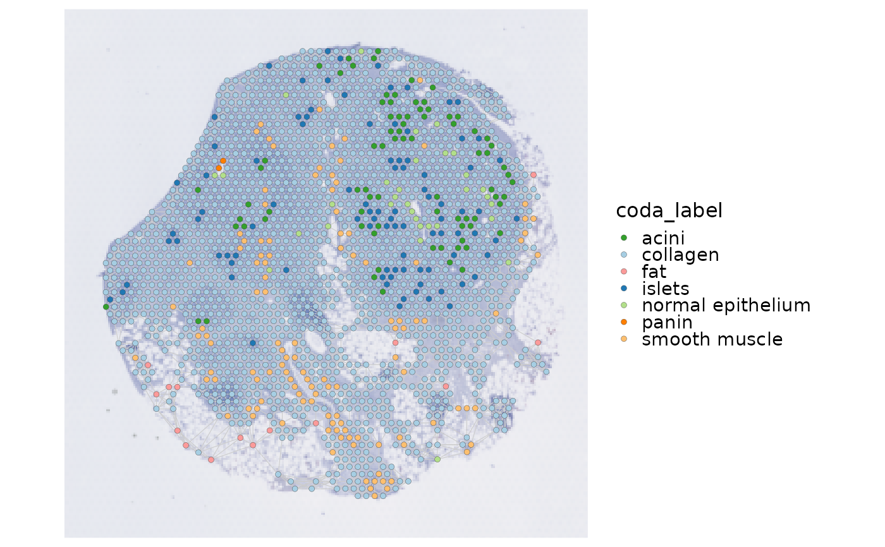

Build a k-nearest-neighbor or radius spatial network from raw Seurat spatial coordinates. Results are stored as named graphs in `srt@tools$SpatialNetwork`.
Arguments
- object
A `Seurat` object.
- method
Network method, either `"knn"` or `"radius"`.
- image
Seurat image name. A single image is selected automatically; multi-image objects require an explicit value.
- coord.cols
Metadata columns used when the object has no image.
- k
Number of neighbors for `method = "knn"`.
- radius
Positive distance threshold for `method = "radius"`, expressed in the raw coordinate units.
- graph.name
Optional graph name. If `NULL`, a deterministic name is generated from the image, method, and method parameter.
- overwrite
Whether an existing graph with the same name may be replaced.
- verbose
Whether to print the message. Default is
TRUE.- srt
Deprecated alias for `object`; supply exactly one of the two. It will be removed in scop 1.0.0.
- sample.by
Optional metadata column identifying independent spatial samples. The selected image/coordinate nodes must belong to one non-missing sample. Subset independent samples and build their graphs separately; this guard does not split graphs. `NULL` retains existing behavior.
Examples
Restored example output generated on 2026-10-10 from SCOP 151e7134c. These historical examples have not been revalidated against the current release. Current usage and arguments are documented above.
data(visium_human_pancreas_sub)
spatial <- visium_human_pancreas_sub
spatial <- RunSpatialNetwork(object = spatial, k = 6, verbose = FALSE)
SpatialNetworkPlot(object = spatial, group.by = "coda_label")
